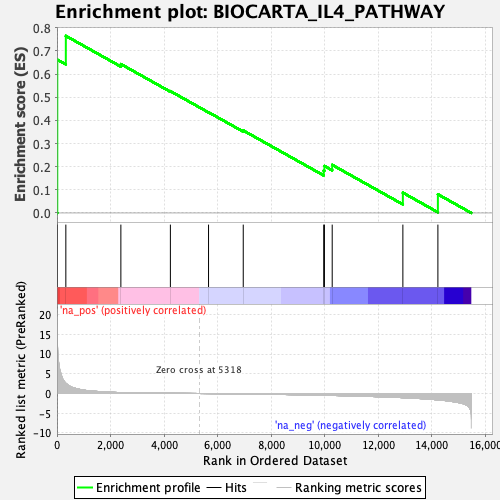
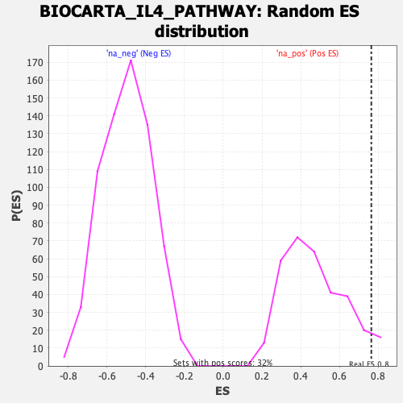

| | | Dataset | DE_genes |
| Phenotype | NoPhenotypeAvailable |
| Upregulated in class | na_pos |
| GeneSet | BIOCARTA_IL4_PATHWAY |
| Enrichment Score (ES) | 0.76477593 |
| Normalized Enrichment Score (NES) | 1.6177472 |
| Nominal p-value | 0.055555556 |
| FDR q-value | 0.25938553 |
| FWER p-Value | 0.926 |
Table: GSEA Results Summary

Fig 1: Enrichment plot: BIOCARTA_IL4_PATHWAY
Profile of the Running ES Score & Positions of GeneSet Members on the Rank Ordered List
| PROBE | GENE SYMBOL | GENE_TITLE | RANK IN GENE LIST | RANK METRIC SCORE | RUNNING ES | CORE ENRICHMENT | | 1 | IL2RG | | | 11 | 13.785 | 0.6622 | Yes |
| 2 | JAK3 | | | 330 | 2.562 | 0.7648 | Yes |
| 3 | IL4 | | | 2385 | 0.229 | 0.6429 | No |
| 4 | JAK1 | | | 4234 | 0.057 | 0.5261 | No |
| 5 | GRB2 | | | 5659 | -0.018 | 0.4349 | No |
| 6 | IRS1 | | | 6955 | -0.107 | 0.3563 | No |
| 7 | RPS6KB1 | | | 9960 | -0.441 | 0.1832 | No |
| 8 | AKT1 | | | 9987 | -0.445 | 0.2029 | No |
| 9 | SHC1 | | | 10277 | -0.488 | 0.2077 | No |
| 10 | STAT6 | | | 12916 | -1.051 | 0.0876 | No |
| 11 | IL4R | | | 14224 | -1.614 | 0.0807 | No |
Table: GSEA details [plain text format]

Fig 2: BIOCARTA_IL4_PATHWAY: Random ES distribution
Gene set null distribution of ES for BIOCARTA_IL4_PATHWAY